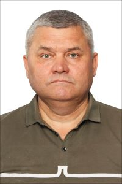

Студент потока 24.08.2022 Сергей Шумилов👦
Автобиография
1971 год – Родился в г. Нижнекамске.
1989-91 год – Служба в рядах Советской Армии.
1992 год – Начал трудовую деятельность в ОАО «Химстрой», каменщиком.
1998 год – Получил диплом об окончании заочного отделения Елабужского государственного педагогического института. Специальность – учитель истории.
2001 год – Принят на работу в Нижнекамский филиал Московского гуманитарно-экономического института, преподавателем кафедры общегуманитарных дисциплин (ОГД); 2005 год – переведён на должность доцента кафедры ОГД; 2006 год – переведён на должность заведующего кафедрой ОГД; 2012 год – переведён на должность декана юридического факультета.
2006 год – Получил диплом об окончании заочного отделения Московского гуманитарно-экономического института. Специальность – юрист.
2008 год - Защитил кандидатскую диссертацию по социальной философии.
С 2015 по 2020 год – Глава Майскогорского сельского поселения Нижнекамского муниципального района Республики Татарстан.
В настоящее время на пенсии по инвалидности.